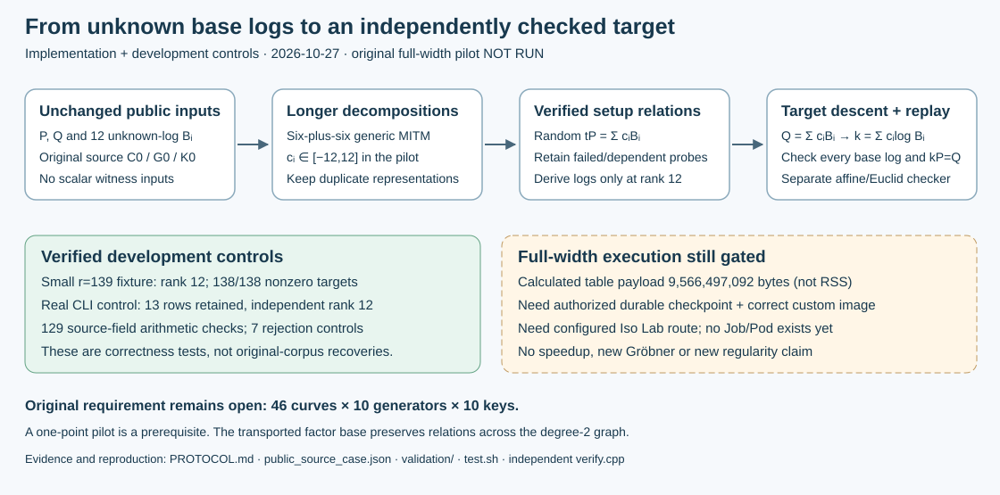

Source-linked development report · 2026-10-27 · Study: research/volcano_ic_recovery_20261027. No new original-corpus IC recovery or performance result.

Native C++ now searches bounded combinations of the original 12 unknown-log base points, collects checked relations, retains duplicates and dependent rows, solves only at full rank, and attempts target descent. A separate verifier redoes affine arithmetic with Euclidean inversion and fresh elimination.
Development control: rank 12, all 138 nonzero toy targets; 2,363 differential group pairs; 2,187 wrapped walker states; 129 checks on the actual public field/points. The real CLI control used 13 relations to rank 12 and passed separate replay. Seven corrupted-input/journal controls were rejected. Receipts: validation/.
The exact source C0/G0/K0 and base are in public_source_case.json. The pilot freezes radius 12, 48 setup attempts, 12 GiB application budget and a 3,600-second deadline. Static table payload is 9,566,497,092 bytes; coefficient-vector count does not prove support coverage or recovery probability.
This is a generic MITM PDP within a relation/linear-algebra pipeline, not a new algebraic solver. Original 46-curve recoveries remain zero. Checkpoint upload was rejected before execution; a configured custom-command EKS route and commit-built image are also needed. No production allocation or launch occurred. Conductor and Cargo were unavailable.
Reproduce: bash research/volcano_ic_recovery_20261027/test.sh NEW_DIRECTORY. Source/protocol: README.md, PROTOCOL.md, SOURCES.sha256. Prior work: Petit–Kosters–Messeng, PKC 2016, §§2–4; existing lead atlas generic-decomposition and transported-relation-yield entries. Semaev/2017-609 PDF access failed; neither unread method is claimed implemented. Canonical volcano/performance graphs stay unchanged: no new comparable full-width observation.